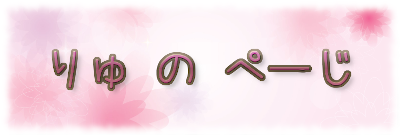

ねじれ役職リストへ
トップページへ戻る
※ このページはりゅがねじれ天国説明書を元に作成したものです。
ねじれ天国の国主様とは一切関係ありません。
内容の確認は行っていますが、間違いがないとは言いきれません。
間違い・要望等ありましたら、
twitter
のDMを頂けたら有難いです。
ねじれの陣営別役職一覧です
表の役職をクリックすると、その役職説明が表示されます
直接入力(ID可)：
:人間カウント
/
:人狼カウント
/
:カウントなし
/
:占霊判定【人狼】
/
:占判定【邪魔】
/
:溶ける
/
:逆呪殺する
判定
…終了判定・勝敗判定
村側陣営
…全ての陣営を排除して勝利になります。
恋人
/
仇敵
/
下僕
/
眷属
/
発狂
/
仲人
/
証人
は除く。
村人
村人
占い師
占い師
中身占い師
邪気眼使い
気占師
学者
観測者
陰陽師
隠者
墓守
風水師
占星術師
易者
数秘術師
水晶占い師
手相占い師
ルーン占い師
魔術師
唱門師
神子
八卦見
霊能者
霊能者
稲荷
導師
霊媒師
記者
捜査官
審神者
ドルイド
覚者
狩人
狩人
風来狩人
狛犬
邪気腕使い
悪鬼
騎士
メイド
侍
侠客
豪傑
門番
狩猟者
守護者
楽士
英雄
庭師
山伏
番人
昼行灯
巫女
巫女
神官
神主
刑事
祈祷師
シャーマン
共有者
共有者
共鳴者
共命者
共演者
共振者
猫又
猫又
仙狸
刑部狸
八房
八咫烏
夜雀
天狗
雷獣
付喪神
襲撃系
銀狼
暗殺者
辻斬り
求道者
情報開示系
予言者
集計人
僧侶
和尚
シスター
神父
探知師
タロット占い師
リーダー
羊飼い
案内人
複合系役職
賢者
仙人
聖人
研究者
他者蘇生
魔女
聖母
召喚師
錬金術師
大神
薬師
フランケンシュタイン
花売り
撫子
自己蘇生
天人
ROM民
生還者
赤ずきん
アリス
白雪姫
いばら姫
役職変化系
覚醒者
適格者
遊び人
ヒーロー
ものまね士
課金者
見習い占い師
コスプレイヤー
申し子
特異点
陣営変化系
神話マニア
潜在者
執事
継承者
修行僧
冒険者
曲者
転生者
酔払い
NEET
女騎士
学生
能楽師
影法師
契約者
監督者
灰かぶり
会話関連
イタコ
少女
降霊者
指導者
未練者
人形遣い
話術士
先生
幽霊
通訳
マッチ売りの少女
票数操作関連
座敷童子
村長
王様
角兎
ギャンブラー
商人
社長
芸者
画家
秘書
花魁
裁判官
鬼女
雀鬼
厄神様
叛逆者
襲撃妨害役職
逃亡者
罠師
探偵
夕鶴
忍者
医師
ハンター
千匹皮
夜廻
その他セットアクション役職
祓魔師
調停官
吟遊詩人
踊り子
調合士
追跡者
司書
歌姫
処刑関連役職
断罪者
贖罪者
粛正人
激おこぷんぷん丸
作家
聖女
独裁者
上様
弁護士
検事
処刑人
看板娘
襲撃時効果役職
超人
蓑亀
子羊
埋毒者
大工
タフガイ
料理人
旗手
処刑時効果役職
王子様
山羊
証明役職
聖痕者
烙印者
貴族
領主
忠犬
絶対者
勇者
司令官
エスパー
パン屋
酒場のマスター
創造主
探索者
洗礼者
自動発動役職
旧鼠
魔物使い
神龍
デメリット役職
迷い子
囚人
不審者
夢遊病者
†漆黒の堕天使†
帽子屋
狼男
亡者
忌み子
市民
リセット
魔法使い
手品師
救世主
ねじれ
クルモン
パブリッカー
Lv上げ民
ねじれ民
管理人
総統閣下
人狼陣営
…恋人、仇敵、妖魔を注意しつつ村側陣営を襲います。
恋人
/
仇敵
/
下僕
/
眷属
/
発狂
/
仲人
/
証人
は除く。
人狼
人狼
襲撃時発動
智狼
餓狼
憑狼
雷狼
熱狼
凍狼
堅狼
迅狼
初回襲撃時発動
狡狼
黒狼
霧狼
牙狼
灯狼
襲撃失敗時発動
鋭狼
魔狼
毒狼
瘴狼
刻狼
投票時発動
古狼
賢狼
帝狼
処刑時発動
印狼
占い/霊能時効果
白狼
(占○)
呪狼
幻狼
(霊○)
護衛時効果
虎狼
会話関連
金狼
静狼
冥狼
響狼
鐘狼
変化関連
朔狼
仔狼
影狼
役職把握関連
仁狼
識狼
送り狼
仲間作成関連
桜狼
月狼
子連れ狼
蘇生関連
神狼
終了時発動
豺狼
その他
絶対人狼
ねじれ狼
骸狼
天狼
人狼猫
狂人
狂人
占い妨害関連
邪魔狂人
凶人
ペテン師
放火魔
工作員
丑刻参
四月馬鹿
犯人
呪怨者
狼少年
仲間把握関連
Ｃ国狂人
狂信者
共犯者
共謀者
首謀者
役職把握関連
インチキ占い師
インチキ霊能者
インチキ巫女
エージェント
事情通
罠設置
詐欺師
爆弾魔
病犬
雪男
役職変化関連
泥棒
半狼
フェイカー
密偵
入れ替わり関連
奇術師
道化師
怪盗
匿名ID民
会話覗き関連
覗き魔
密告者
仲間作成関連
破綻者
内通者
蘇生関連
反魂者
その他セットアクション役職
傀儡師
脅迫者
ハッカー
刺客
縛師
投票操作役職
イカサマ師
革命家
圧制者
支配者
身代わり/襲撃/処刑耐性役職
強人
暴君
外道
鬼畜
ハートの女王
追加処刑/襲撃役職
煽動者
通り魔
殺戮者
狼少女
サブ役職
発狂
妖魔陣営
…占われないように気をつけ生存を目指します。
恋人
/
仇敵
/
発狂
は除く。
妖魔
妖魔
呪殺耐性
狐
妖獣
魔人
邪神
まもの
逢魔
呪殺妨害関連
妖蛇
悪魔
業魔
鬼
役職把握関連
妖犬
妖猿
妖雉
狐狗狸さん
罠設置関連
妖鼬
病魔
雪女
入れ替わり関連
妖狸
妖蟲
這い寄る混沌
蘇生関連
妖精
セットアクション役職
小悪魔
睡魔
役職変化
鵺
襲撃時発動
妖狐
九尾
会話覗き関連
妖兎
閻魔
会話関連
妖狼
旧支配者
使い魔
魔王
仲間作成関連
ドラキュラ
淫魔
夜魔
海魔
その他
ナイトメア
群馬
ドッペルゲンガー
犬神
猿神
蛇神
ドッペルゲンガー
背徳者
背徳者
異端者
崇拝者
冒涜者
ネクロマンサー
半妖
深きものども
背信者
殉教者
倒錯者
歪曲者
ゾンビ
サブ役職
下僕
眷属
恋人陣営
…恋人になった人は元の自分の陣営を裏切って勝利を目指します。
求愛者
求愛者
悪女
姫様
リア充
ストーカー
ヒロイン
共愛者
溺愛者
マゾ
花嫁
乙女
キューピッド
キューピッド
絡新婦
女神
アイドル
女豹
天女
サブ役職
恋人
仲人
復讐者陣営
…敵対する仇敵を倒して生存を目指します。
復讐者
復讐者
復讐鬼
ライバル
共闘者
決闘者
サド
剣闘士
阿修羅
戦乙女
戦乙女
裏切者
闘神
羅刹
夜叉
サブ役職
仇敵
証人
教祖陣営
…生存者全てを信者にすることを目指します。
恋人
/
仇敵
/
下僕
/
眷属
/
発狂
は除く。
教祖
宗祖
開祖
始祖
元祖
教主
教皇
吸血鬼陣営
…死亡した屍者の数が生存者数を上回ることを目指します。
恋人
/
仇敵
/
下僕
/
眷属
/
発狂
/
仲人
/
証人
は除く。
吸血鬼
鮮血鬼
純血鬼
採血鬼
増血鬼
屍鬼
殲鬼
吸血姫
吸血公
一匹狼陣営
…人狼を排除し、生存を目指します。
恋人
/
仇敵
/
下僕
/
眷属
/
発狂
/
仲人
/
証人
は除く。
一匹狼
殺人鬼陣営
…人狼と一匹狼を排除し、生存を目指します。
恋人
/
仇敵
/
下僕
/
眷属
/
発狂
/
仲人
/
証人
は除く。
殺人鬼
黒幕陣営
…生存を目指します。
黒幕
サブ役職
四天王
その他の陣営
…どの陣営にも属しません。特定の勝敗判定が下されます。
蝙蝠
蝙蝠
鬣犬
ハムスター
三月兎
眠り鼠
狢
貂
梟
獏
蜘蛛
蝦蟇
蟒蛇
蛞蝓
天使
堕天使
不死鳥
鴉
鼠
燕
鶏
禿鷹
蜥蜴
宇宙人
ロボット
ガーゴイル
ガチャピン
ムック
時計ウサギ
チェシャ猫
小夜啼鳥
旅人
旅人
用心棒
二重人格
情報屋
傾奇者
プレデター
トリックスター
人魚姫
強制敗北
盗賊
墓荒らし
ジョーカー
その他
傭兵
フォロワー
死神
愚者
咎人
イレギュラー
べるが民
べるが狼
笛吹き
棺担ぎ
靴磨き
ツンデレ
ヤンデレ
コンピュータ
クラムボン
婆娑羅
天邪鬼
無法者
裁定者
不死者
エルフ
ドワーフ
サブ役職(陣営変化あり)
人狼陣営
発狂
妖魔陣営
下僕
眷属
恋人陣営
恋人
仲人
復讐者陣営
仇敵
宿敵
証人
その他陣営変化
従者
サブ役職(陣営変化なし)
愛人
(恋人表記)
悪霊
(妖魔判定)
信者
屍者
奴隷
怪物
四天王
絆
師匠
罠
生贄
富者
亡霊
獲物
羊皮
狼火
狐火
鬼火
怪火
負傷
瀕死
病弱
失墜
毒
麻痺
熱病
凍傷
囮
加護
光明
暗闇
龍玉
ギャルのパンティ
クルモン化
匿名ID化
新参
中参
古参
廃人